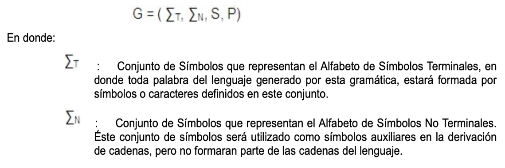

Las gramaticas son las reglas que se utilizan para cosntruir el lenguaje. Estas mismas describen un conjunto de símbolos pertenecientes a un lenguaje específico.
Las gramaticas hacen referencia a dos grandes grupos de símbolos ordenados, es decir:
1.- Los lenguajes naturales
2.- Los lengujes formales
Los lenguajes formales son aquellos que nos son conocidos de toda la vida como el inglés y el español. Y las gramaticas son el conjunto de reglas que existen para la convinación del abecedario de las mismas
Pordemos encontrarnos con que hay sujetos, predicados, sustativos, infinitivos, etc.
Mientras que las gramaticas formales son menos conocidas. Y son las que están más relacionadas con los lenguajes de programación. Al igual que con las gramáticas naturales son aquellas reglas que nos dicen la forma en al que los símbolos de nuestro abecedario deben de estructurarse.
En la siguiente imagen podemos encontrar la formulación formal de una gramática y sus elementos:
Video en el que se explica el tema: